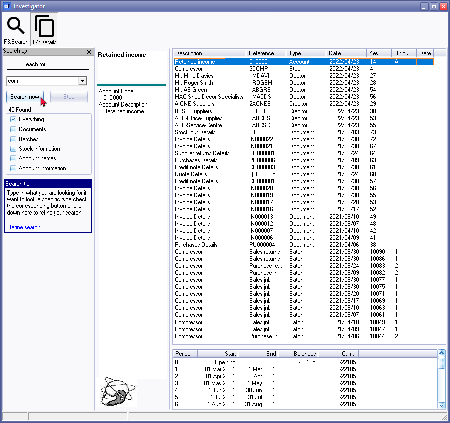
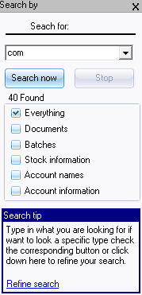
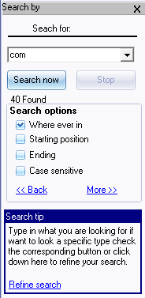
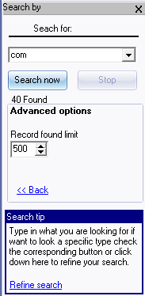

Search - Investigator
The Investigator allows you to search for data in an open Set of Books. To search or locate data, you may enter a valid word or phrase to search for an item. This facility also allows you to define, or refine, or filter the search criteria, and select to view the details for a selected search result.
|
|
SERIAL TRACKING - If you have entered a serial number of a product (stock item) as a comment on your sales documents (Invoices, Credit notes and/or Quotes) and/or on Purchase documents (Purchases and Supplier returns and/or Orders), you may enter the serial number in the "Search for": field. If you click on the Search now button, the Documents will be listed. You may then double-click on the selected document to preview the document. |

|
|
Comments entered in document lines are searchable. Remarks is not searchable. |

To search for data using the Investigator:
- On the Default ribbon, select Search. The "Investigator" screen is displayed:

- Enter a word or phrase to search for specific data. To filter the data, you may also select to include everything or documents, batches, stock information, account names and/or account information.
- Click on the Search now button or on the F3:Search icon. The number of items found (which matches the search criteria) will be displayed, and each of the items found will be listed.
- Select an item type from the search results list and right-click - select "Show detail" option on the context menu (or double-click) to launch the options. The types is as follows:
- Account - Launch the T-Account viewer - You may select or enter the dates from and dates to, as well as any filters (if necessary) to view and filter the transactions. Transactions may be printed and exported to a spreadsheet file.
- Debtor / Creditor - Launch the Debtor accounts screen to edit or check specific details for the debtor (customer / client). If a Creditor is indicated, it will launch the specific creditor (supplier / vendor) account.
- Stock - Launch the Stock items screen to edit or check specific details for the stock item.
- Document - The selected document will be printed.
- Batch - Launch the T-Account viewer - You may select or enter the dates from and dates to, as well as any filters (if necessary) to view and filter the transactions. Transactions may be printed and exported to a spreadsheet file.
|
|
For certain types (e.g. Account), the F4:Details icon will be available. If you click on this icon, the balances for general ledger accounts will be displayed for each period. |
- To close or exit this screen, click on the Close button on the title bar.
Further Search options are available to select from. If you click on the More >> link, the Advanced options will be available in which the limit for the number of records found may be set.
To refine or filter the search criteria, you may click on the Refine search link.
|
 |
 |
 |